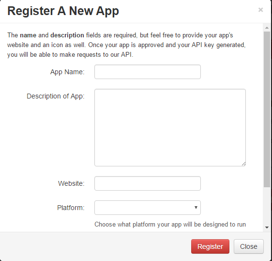

Register
Before you starts using this API, you have to register to use a key that will be provided to you through the main ste. You can register here. It doesn't take too long and after you can get access to the everything.
Registering for an API key
Next navigate to My Apps and click register a new app. A window like this should open up.
If you don't have a website name and you want one, you can make one through github. This is a handy guide on how to make one
After this, you should have your key and now have access to the database. now we will start to get into the nitty gritty of the API and actually make an app.